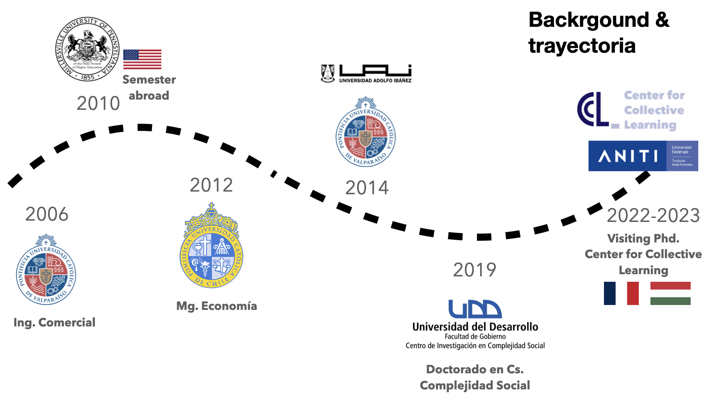
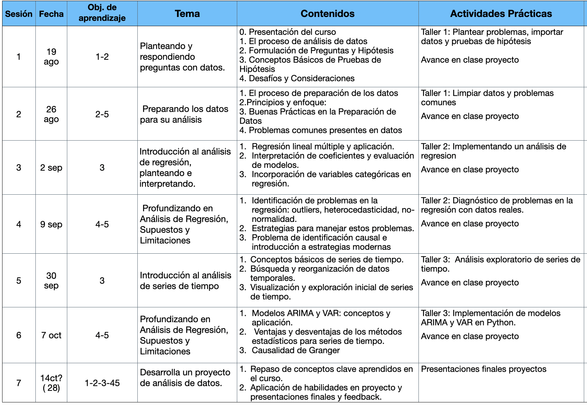

Presentación del curso
Curso: Análisis de datos
Bienvenida al curso
Hola! Soy Melanie y seré la docente de este curso, en el que aprenderás los fundamentos del análisis de datos, tanto desde una perspectiva teórica como práctica (en Python).
Me pueden contactar al mail melanie.oyarzun@udd.cl
Un poco sobre mi:

En la sesión de hoy:
- Revisaremos los objetivos del curso, metodología, calendario y evaluaciones.
- Revisaremos algunos principios de como plantear y responder preguntas con datos
- En ese contexto, realizaremos un breve repaso a pruebas de hipótesis.
Descricpión del curso
Esta asignatura presentará los conceptos básicos de pre-procesamiento y análisis descriptivo de datos.
El objetivo principal es poder determinar cuáles datos son susceptibles de ser convertidos en información para apoyar la toma de decisiones, y separar el ruido de la señal.
Es el primer paso en un proyecto de ciencia de datos.
Los estudiantes aprenderán a identificar las problemáticas que presentan los datos desde el momento de su registro (por ej., error muestral, outliers), así como usar las herramientas necesarias para describirlos (por ej., distribuciones e histogramas), explorarlos (por ej., agrupar o filtrar bajo un criterio específico), y cruzarlos (por ej., utilizando otras fuentes).
Asimismo, los estudiantes comprenderán que las etapas de este proceso no son lineales, sino que se benefician del diseño iterativo.
Contexto en el programa de magister
- Esta asignatura se enmarca en la línea de desarrollo de data science.
- Esta asignatura tributa, a través de sus resultados de aprendizaje, a las siguientes competencias del perfil de egreso del Magíster en Data Science:
- Aplicar teorías, algoritmos, métodos, técnicas y herramientas básicas y avanzadas de Data Science para analizar, resolver y hacer una evaluación crítica de desafíos complejos e interdisciplinarios, utilizando datos internos y externos de las organizaciones.
- Comunica efectivamente y argumenta sobre los resultados de su trabajo a públicos especializados y no especializados, de forma oral, escrita y visual, utilizando distintos medios y soportes.
- Demuestra responsabilidad y comportamiento ético, cumpliendo los protocolos y normas que guían su desempeño, en las iniciativas de Data science.
- Demuestra capacidad de aprendizaje continuo, mediante la aplicación de estrategias para utilizar nuevo conocimiento en data science en su ámbito de desempeño.
Objetivos de la asignatura (resultados de aprendizaje)
- Identificar las ventajas y desventajas de las herramientas computacionales utilizadas para el análisis de datos, utilizando lenguaje técnico afín.
- Recopilar y limpiar datos, en base a una propuesta de replicabilidad del proceso.
- Transformar y analizar datos, realizando preguntas clave para resolver problemas a partir del contexto en que se desarrollan.
- Modelar datos para extraer información y generar conclusiones basadas en evidencia.
- Identificar las buenas prácticas en el modelamiento de datos.
Contenidos
- Limpieza y estructura de datos.
- Formateo de datos
- Transformación de datos
- ETL
- Regresión y predicción.
- Regresión lineal múltiple.
- Predicción usando regresión y los peligros de la extrapolación.
- Factores y variables categóricas en una regresión.
- Multicolinealidad, variables de confusión e interacciones.
- Diagnóstico de una regresión y supuestos (outliers, heterocedasticidad, no-normalidad, errores correlacionados y no-linealidad)
- Sesgos en los análisis: Paradoja de Simpson, Paradoja de Berkson y Collider Bias.
- Series de tiempo
- Búsqueda y reorganización de datos de series de tiempo
- Análisis de datos exploratorios para series temporales
- Histogramas, gráfico de dispersión y métodos exploratorios para series de tiempo
- Estacionariedad y raíz unitaria
- Autocorrelación y correlaciones espurias en series de tiempo
- Modelos estadísticos para series de tiempo
- ¿Por qué no utilizar una regresión lineal?
- Modelos autorregresivos (AR), ARIMA y Autorregresión vectorial (VAR)
- Ventajas y desventajas de los métodos estadísticos para series de tiempo
Evaluación
El curso tendrá dos evaluaciones basadas en el trabajo en clase y refuerzo de los contenidos fuera del horario lectivo.
Talleres de aplicación (30%) Durante las clases se desarrollará un taller que aplique los contenidos desarrollados en cada una de las tres principales unidades. Se pueden trabajar de manera individual, o en grupo de hasta 3 personas.
- Taller 1: Limpieza, análisis descriptivo de datosy pruebas de hipótesis (repasa elementos del curso anterior) (sesión 1 - 2)
- Taller 2: Análisis de regresión. (Sesiones 3-4)
- Taller 3: Análisis de serie de tiempo (sesiones 5-6)
La mayoría del taller se espera lo puedan responder durante la clase, sin embargo tendrán una semana de margen para su entrega. Estos se deben entregar en la plataforma canvas, en PDF (para su evaluación) y en .ipynb/.qmd, que será corroborado que se pueda ejecutar y sea consistente con el pdf.
Estos se evaluarán de acuerdo a la siguiente rúbrica: [[Rubrica taller de aplicacion]] Una vez sean entregados los talleres, se hará publica una pauta de desarrollo de cada taller.
Proyecto de análisis de datos (70%) Vamos a desarrollar durante el curso un proyecto, en este deben elegir un conjunto de datos, vamos a proponer una pregunta e hipótesis a testear, desarrollar análisis (de regresión o serie de tiempo) y concluir en base a sus resultados obtenidos, mencionando las limitaciones de su análisis. El proyecto se debe realizar en grupos entre 3 a 5 personas.
Este proyecto se evaluará entonces en base a tres elementos, avance durante la clase (20%), reporte de análisis y resultados (20%)
- Avance en clase ( 20% ) Algunos elementos del proyecto serán desarrollados durante tiempo de clase, pero se espera que la profundización sea llevada en el tiempo lectivo dedicado al curso.
Rubrica de trabajo en clase (se evalúa al final de la clase)
- Asistencia y participación
- Planteamiento de problemas
- Desarrollo
- Resultados, interpretación y conclusiones
- Reporte de análisis y resultados (20%) Deben documentar su análisis de datos mediante un notebook. Este se revisará en si mismo, para fomentar las buenas prácticas y reproducibilidad de su análisis. Rubrica de notebook reporte de análisis
- Entrega a tiempo
- Uso correcto del lenguaje y redacción a nivel profesional
- Orden
- Calidad de código
- Consistencia con presentación
- Presentación oral final (30%) (rubrica cristian) En la última sesión del curso, cada grupo debe presentar su análisis y resultados . Esta presentación será de 10 minutos por grupo y 5 minutos para preguntas, las cuales serán dirigidas a cada estudiante del grupo.
Calendario del curso
Resumen:

Detallado
Fecha: 19 agosto
Objetivos:
- Aprender a formular preguntas y plantear hipótesis que puedan ser abordadas mediante el análisis de datos.
- Desarrollar la habilidad de realizar pruebas de hipótesis y comprender la interpretación de sus resultados.
- Comprender el papel del proceso de adquisición y almacenamiento en un proyecto de análisis de datos.
Contenidos:
El proceso de análisis de datos
- Planteamiento de preguntas
- Adquision y almacenmiento de los datos
- Preparación de los datos
- Una visión general a las metodologías de análisis que veremos en el curso
Formulación de Preguntas y Hipótesis:
- Importancia de definir preguntas claras y específicas.
- Diferenciación entre preguntas exploratorias y confirmatorias.
- Creación de hipótesis nulas y alternativas.
Hipótesis y Variables:
- Identificación de variables independientes y dependientes.
- Relación entre hipótesis y variables a analizar.
Conceptos Básicos de Pruebas de Hipótesis:
- Definición de hipótesis nula y alternativa.
- Niveles de significancia y p-values.
- Errores tipo I y tipo II.
Tipos de Pruebas de Hipótesis:
- Pruebas t para comparación de medias.
- Pruebas chi-cuadrado para variables categóricas.
- Pruebas ANOVA para comparación de múltiples grupos.
Interpretación de Resultados:
- Evaluación de p-values y toma de decisiones.
- Significación estadística vs. significación práctica.
- Comunicación de los resultados de las pruebas de hipótesis.
Importancia de la Adquisición y Almacenamiento de Datos:
- Garantía de calidad y fiabilidad en la obtención de datos.
- Exploración de diferentes fuentes de datos y su impacto en los resultados.
- Metodologias de levantamiento y adquision
Desafíos y Consideraciones:
- Privacidad y seguridad de los datos.
- Limpieza y transformación durante la preparación de datos.
Reproducibilidad y Control de Versiones (GIT):
- Importancia de mantener un registro de los cambios en los datos.
- Uso de sistemas de control de versiones como GIT para rastrear cambios.
- Aplicación de control de versiones en proyectos de preparación de datos.
Bibliografia recomendada:
Actividades:
Taller 1 (incluidas en slides 1)
Proyecto clase 1: Conformación de grupos, definición de temas, primeras hipótesis y datos.
Fecha: 26 agosto
Objetivos:
Comprender la importancia del proceso de preparación de datos para el análisis, reconociendo principios y enfoques clave junto con sus ventajas y desventajas.
Desarrollar habilidades prácticas en la preparación de datos, identificando y abordando problemas comunes como valores faltantes, valores atípicos y formatos inconsistentes, así como enfoques de trabajo eficientes.
Contenidos:
- El proceso de preparación de los datos
- Significado y relevancia de la preparación de datos.
- Ejemplos reales de cómo la falta de preparación puede afectar los resultados.
- Principios y enfoques
- Extract, Transform, Load (ETL): Proceso fundamental en la preparación de datos.
- Data Wrangling: Técnicas para dar forma y estructura a los datos.
- Datos Tidy: Organización y reestructuración para un análisis eficaz.
- Buenas Prácticas en la Preparación de Datos
- Documentación y Consistencia
- Importancia de la documentación detallada.
- Mantener nomenclatura y convenciones consistentes.
- Validación y Verificación
- Validación cruzada y verificación de integridad.
- Cumplir con reglas y restricciones esperadas.
- Reproducibilidad y Versionado
- Entorno de trabajo reproducible (Jupyter Notebooks, R Markdown).
- Utilización de sistemas de control de versiones (GIT).
- Comunicación y Validación Colaborativa
- Comunicación clara de pasos y resultados.
- Validación intermedia con colaboradores para feedback.
- Seguridad y privacidad de los datos
- Documentación y Consistencia
- Problemas comunes presentes en datos
- Valores faltantes:
- Estrategias para manejar valores faltantes.
- Decidir entre imputación, eliminación o conservación.
- Valores atípicos
- Normalización y estandarización
- Errores de registro Bibliografia recomendada:
- Valores faltantes:
- “Practical Statistics for Data Scientists” (Capítulo 2).
- “Doing Data Science” (Capítulo 1).
Actividades de aplicación práctica:
Taller 1: Limpieza y análisis descriptivo de datos en la practica con datos de educación (repasa elementos del curso anterior) (sesión 1)
Proyecto:
- Inicie el proyecto, cree un documento notebook en el cual van a alojarsu proyecto
- Explorar los datos
- Diagnosticar problemas.
- La hipótesis que pensamos, ¿tienen variables que pueda concretizarlas? ¿Qué variables usar?
Fecha: 2 septiembre
Objetivos:
Comprender los conceptos fundamentales del análisis de regresión lineal y su aplicación en la resolución de problemas.
Desarrollar la habilidad de plantear modelos e interpretar los resultados obtenidos del análisis de regresión, para aplicarlos en la toma de decisiones.
Contenidos
Introducción al Análisis de Regresión:
- Definición y concepto de regresión.
- Uso y aplicabilidad en la toma de decisiones.
Regresión Lineal Múltiple:
- Extensión del modelo de regresión a múltiples variables predictoras.
- Ecuación de regresión lineal múltiple.
Interpretación de Coeficientes:
- Significado e interpretación de los coeficientes de regresión.
- Influencia de las variables predictoras en la variable de respuesta.
Evaluación de Modelos de Regresión:
- Uso de medidas como el coeficiente de determinación (R²) y el error estándar de estimación.
- Interpretación de los resultados de evaluación.
Incorporación de Variables Categóricas:
- Transformación de variables categóricas en variables numéricas.
- Interpretación de coeficientes para variables categóricas.
Bibliografía recomendada
Actividades de aplicación práctica
Taller 2:
Proyecto:
Plantear modelos de regresión que implementen las hipótesis del proyecto
Estimar e interpretar modelos
Fecha: 9 septiembre
Objetivos:
- Explorar los supuestos y limitaciones asociados al análisis de regresión y desarrollar estrategias para manejar problemas comunes.
- Aplicar estrategias prácticas para identificar y abordar problemas en el análisis de regresión.
Contenidos
Supuestos en el Análisis de Regresión:
- Identificación de supuestos clave: linealidad, independencia, homoscedasticidad y normalidad.
- Significado de cada supuesto y su importancia en la interpretación de resultados.
Identificación de Problemas en la Regresión:
- Identificación y manejo de outliers en los datos.
- Reconocimiento de la heterocedasticidad y sus implicaciones.
- Detección de la no-normalidad de los residuos.
Estrategias para Manejar Problemas:
- Transformación de variables para abordar problemas de linealidad.
- Métodos para reducir la influencia de outliers.
- Uso de transformaciones para tratar la heterocedasticidad.
- Pruebas y técnicas para verificar y mejorar la normalidad.
Bibliografía recomendada
Actividades de aplicación práctica
Taller 2:
Proyecto:
Revisar supuestos de modelo de regresión
Discutir problemas de identificación y limitaciones
Fecha: 30 septiembre
Objetivos:
Identificar las características y particularidades de los datos de series de tiempo, comprendiendo sus aplicaciones profesionales.
Realizar un análisis exploratorio de una serie de tiempo, identificando características clave para su modelamiento.
Contenidos
Conceptos Básicos de Series de Tiempo:
- Definición y características de una serie de tiempo.
- Ejemplos de aplicaciones en distintos campos profesionales.
Particularidades de los Datos Temporales:
- Dependencia temporal y autocorrelación.
- Tendencias, estacionalidad y ciclos.
Aplicaciones Profesionales:
- Casos de estudio en finanzas, economía, medicina y otros campos.
- Cómo el análisis de series de tiempo puede brindar insights valiosos.
Búsqueda y Reorganización de Datos Temporales:
- Fuentes de datos para series de tiempo (bases de datos, APIs, archivos).
- Importancia de la temporalidad y el orden en los datos.
Visualización y Exploración Inicial:
- Gráficos de línea y dispersión para identificar tendencias y patrones.
- Estudio de estacionalidad y ciclos mediante gráficos.
Bibliografía recomendada
Actividades de aplicación práctica
Taller 3:
Proyecto:
Fecha: 7 occtubre
Objetivos:
Comprender los conceptos y aplicaciones de los modelos ARIMA y VAR en el análisis de series temporales.
Evaluar las ventajas y desventajas de los métodos estadísticos para el análisis de series de tiempo y seleccionar la técnica más adecuada.
Contenidos
Modelos ARIMA:
- Definición y componentes de los modelos ARIMA.
- Identificación, Estimación y Validación de un modelo ARIMA.
- Uso de correlogramas y gráficos ACF/PACF para la identificación.
Modelos VAR (Vector Autoregressive):
- Introducción a los modelos VAR y su aplicación.
- Uso de matrices de coeficientes para representar relaciones entre variables.
Ventajas y Desventajas de los Métodos Estadísticos:
- Uso de modelos estadísticos en comparación con otros enfoques.
- Limitaciones y supuestos asociados a los modelos ARIMA y VAR.
Selección del Método Adecuado:
- Criterios para elegir entre modelos ARIMA y VAR.
- Consideraciones al evaluar las alternativas disponibles.
Otros modelos
- GARCH
- SARIMA y SARIMAX
- Alisado exponencial
- Cambio estructural
Bibliografía recomendada
Actividades de aplicación práctica
Taller 3:
Proyecto:
Fecha: TBA
Objetivos:
- Cerrar el curso, poniendo en contexto las principales herramientas de análisis de datos.
- Presentar un proyecto de análisis de datos
- Recibir feedback y propuestas de mejoras, tanto del trabajo propio como el de sus compañeros.
Contenidos
Bibliografía recomendada
Actividades de aplicación práctica
- Proyecto: Presentaciones finales